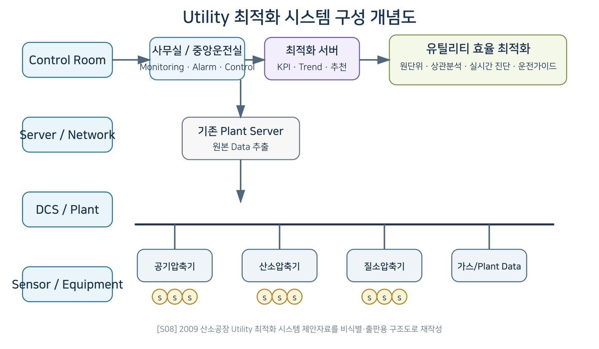
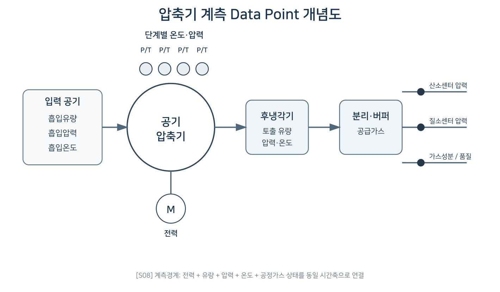

데이터로 찾는 산업·건물 에너지절감 실무 — 79쪽
그림 16-4. Utility 최적화 시스템 구성 개념도. [S08] 2009 산소공장 Utility 최적화 시스템 제 안자료를 고객 식별정보 제거 후 출판용 도식으로 재작성. 그림 16-5. 압축기 계측 Data Point 개념도. [S08] 전력·유량·압력·온도와 공정가스 상태의 계측 경계를 출판용 도식으로 재작성. KPI·운전기준·진단 로직 공기·산소·질소의 수요량과 요구압력을 만족하는 범위에서 압축기별 원단위와 가동대수를 비교한다.


인쇄본 기준 p. 79